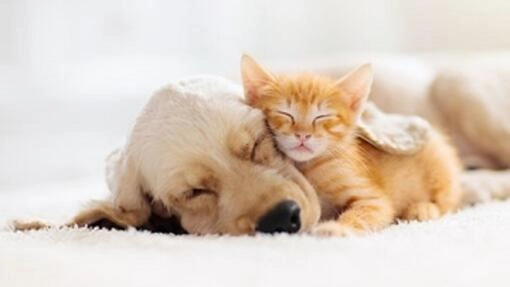

Sobre nosotros

Somos una empresa familiar creada para ofrecer lo mejor para nuestras mascotas. Nació por el amor que tenemos por Lupe nuestra gatita, y decidimos crear una empresa que ayude a todos a encontrar buenos productos a precios razonables, ayudar a otros a definir que es lo mejor para su mascota dentro de sus posibilidades. Nuestro principal objetivo es otorgar productos de calidad aprobada por nosotros, esto quiere decir que No vendemos alimentos o productos que nosotros no usaríamos en nuestras propias mascotas. Compartimos nuestro amor hacia las mascotas, por lo que les brindamos la mejor calidad de atención y el asesoramiento necesario para su cuidado y protección. Contamos con gran variedad de alimentos balanceados, y de a poco estamos sumando más y más productos!